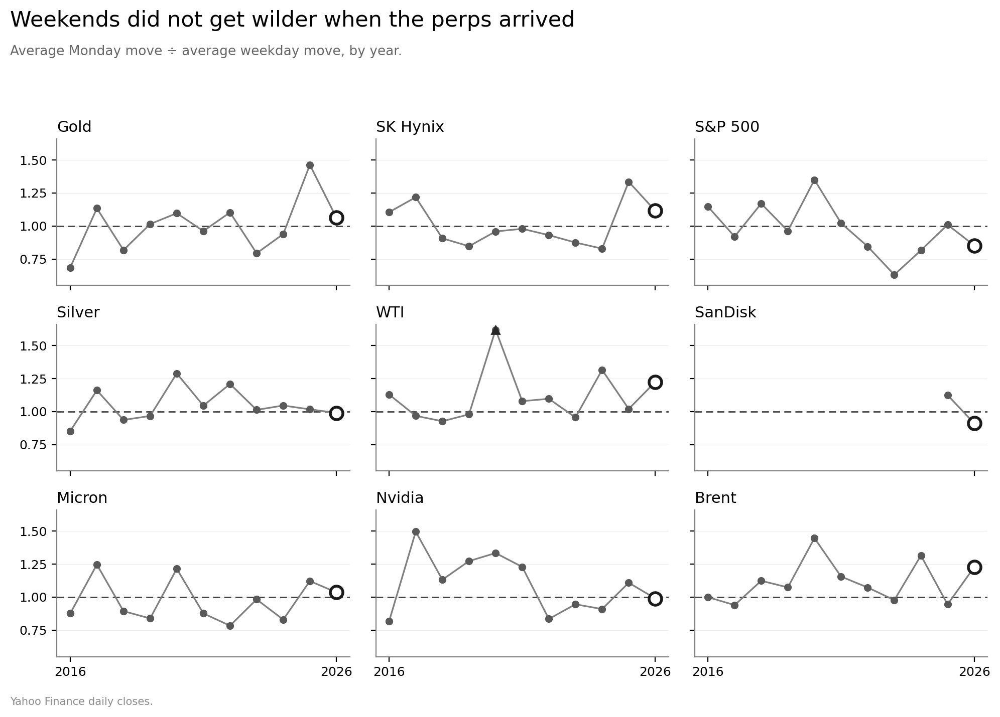

Last Sunday, America resumed its strikes on Iran, and Tehran again declared the Strait of Hormuz shut. With Intercontinental Exchange (ICE) and the Chicago Mercantile Exchange closed for the weekend, Hyperliquid and Binance became the first venues to price the news. Oil rose almost 10% on Monday, its biggest one-day gain since 2020.
Jennifer Hughes is right that commercial hedgers are unlikely to abandon conventional futures for perpetual contracts ('Perps are distracting Wall Street, not disrupting it', July 16). Without expiry dates or physical delivery, perpetuals are no substitute for manufacturers hedging input costs or farmers selling a harvest forward.
None of which has reassured investors, though. Shares in Cboe Global Markets, one of the world's largest derivatives exchanges, fell by a third in the month after regulators approved Kalshi's bitcoin perpetual, and remain down close to a fifth. Cboe had launched its own 'continuous future' the year before, while ICE has licensed its Brent benchmark to OKX, an offshore crypto platform in which it owns a stake.
The sums are still small: Hyperliquid's oil contract traded about two million barrels' worth in a day last week, while ICE Brent regularly trades more than a billion. Yet a benchmark is only as good as the market that creates it. In chasing the liquidity generated by perpetuals, established exchanges risk letting the tail wag the dog.
I looked for hints of this across the nine assets underlying the biggest non-crypto perpetuals. There aren't any so far.
